クッポグラフィー 高輪ゲートウェイスタジオ
Kuppography Takanawa Gateway
美術館に作品を見に行くようでいて、そこにいる自分たちが作品になっていく。そんな没入感のある体験をつくれないか、というところから設計を進めた。
これまでクッポグラフィーのスタジオを設計する中で、大切にしたいと感じていたのは、写真を撮る前後も含めた時間だった。来店して、支度をして、撮影をして、最後にその写真を上映してもらう。スタッフとのやりとりも含めて、その一続きの時間が心地よく、自分たちに向き合えるものであってほしい。
今回の場所は商業施設の中にある。周囲には、素材の表情や色をしっかりと感じられる店舗が並ぶだろうと考えた。共用部にもそうした豊かさがある。そこで、このスタジオは白を基調にすることにした。周囲との対比によって、入ったときに少し感覚が切り替わるように。だけど、ただ均質な白い箱にするのではなく、壁や天井には色味や質感を持たせている。
支度部屋に入ってからは、商業施設の中にいることを忘れるくらい、スタッフと自分たちだけの時間に入り込めるようにしたい。支度を終えてスタジオへ向かうと、ガラス面に沿った通路から、高輪の街の上を抜けて海の方へと広がる景色が見える。少しずつ撮影への気持ちが整ってきたところで、その眺めが高揚感につながればと思った。通路はモルタルの仕上げ方を工夫し、移動するだけの場所にも、撮影へ向かうアプローチとしての表情をつくっている。
スタジオは、撮る距離や角度が変わっても、背景に不要な線がなるべく現れないよう曲面の壁になっている。一方向から入る光を、壁がさまざまな角度で受け止める。その陰影のグラデーションが、写真の背景になっていくことを考えた。
平面計画を始めたときには、水面に波紋が広がり、いくつもの輪が重なるようなイメージもあった。面積や建物の制約から、そのまま複雑な形をつくることはできなかったけれど、円を描くように空間をたどりながら、支度部屋やスタジオ、シアターといった場所に出会っていく。その感覚は、プランの中に残そうとしている。
撮影後の写真を見るシアターは、閉じながらも、外に少し開いた場所にした。座っている人からは共用部が見えず、目の前の映像に集中できる。一方、共用部を歩く人には上映している映像が見えて、「何をしている場所だろう」と気に留めてもらえる。見られたくないときにはスクリーンを下ろし、視線を遮ることもできる。自分たちの写真に没入する時間と、外の人がこのスタジオに興味を持つきっかけを、同じ場所につくろうとした。
風景を抽象化し、光を具現化するカーテン
このスタジオのカーテンをつくってくれたのは、ファブリックスケープさん。布を通して外の風景が抽象化され、差し込む光そのものが形を持ったように感じられる。見慣れたはずの景色や光が、少し違って見えてくる。そんなふうに、そこにいる人の気持ちを動かしてくれる風景が、スタジオの中に生まれた。
人の存在を引き立てる家具とオブジェ
待合のスツールや受付カウンター、スタジオの中に置くオブジェは、SO KOIZUMI DESIGNさんに依頼した。
スタジオのためにつくられたベンチ「Presence」は、彫刻のような存在感がありながら、人が座ることで、その人の存在が引き立つ。ステンレスの硬質な表情と、人の肌やしぐさとの対比も、この場所で生まれる写真の背景になる。
ベンチ「Presence」についての記事を読む — AXIS Web
設計：a.d.p
施工：JPDH
造作家具：So Koizumi Design
所在地：東京都
設計：2025年3月
工事：2025年6月
竣工：2025年6月
写真：kuppography
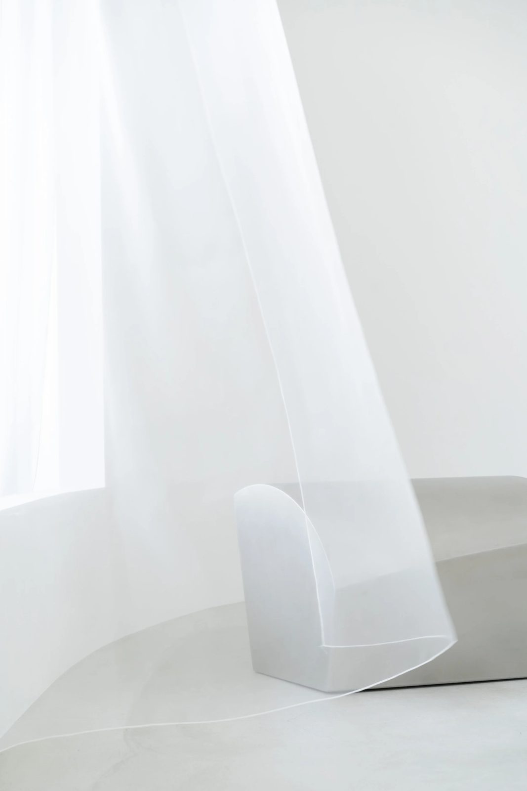
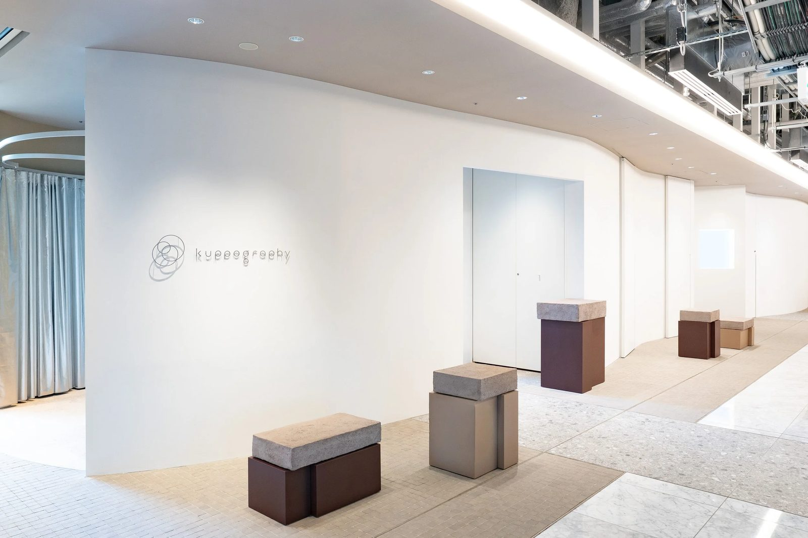
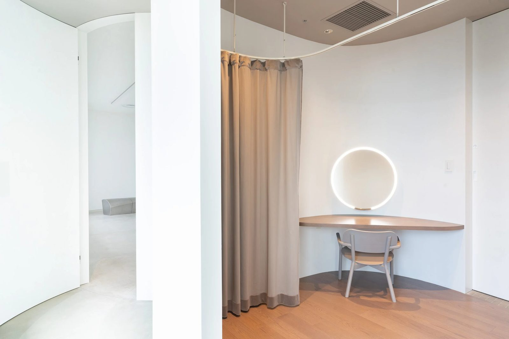
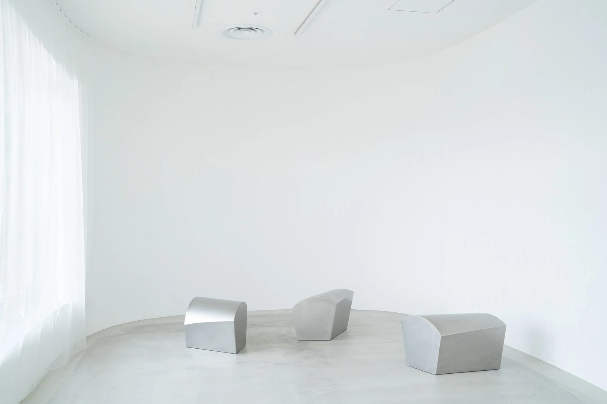
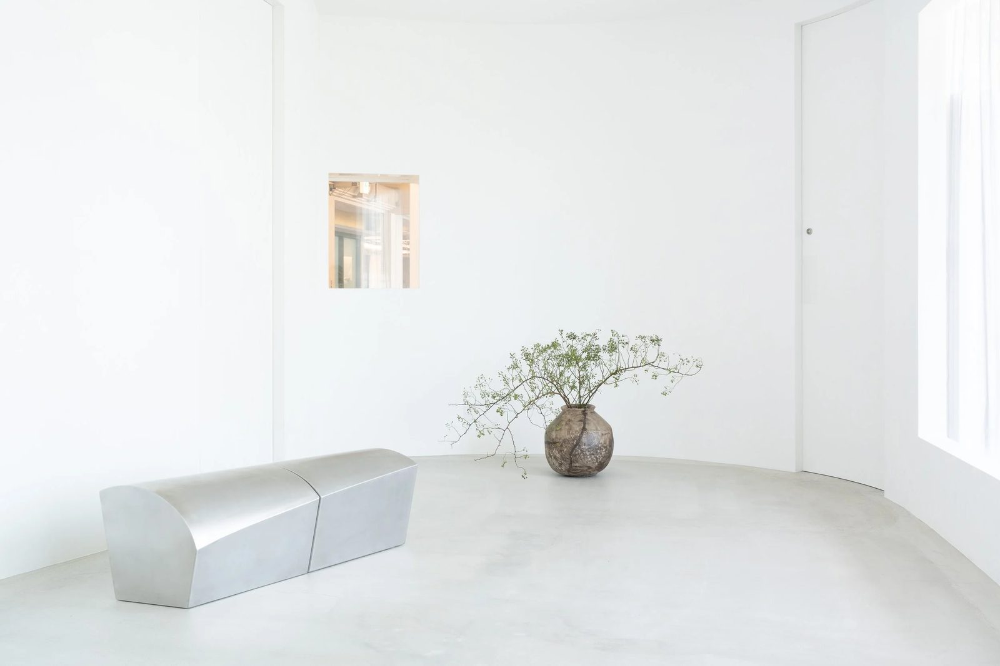
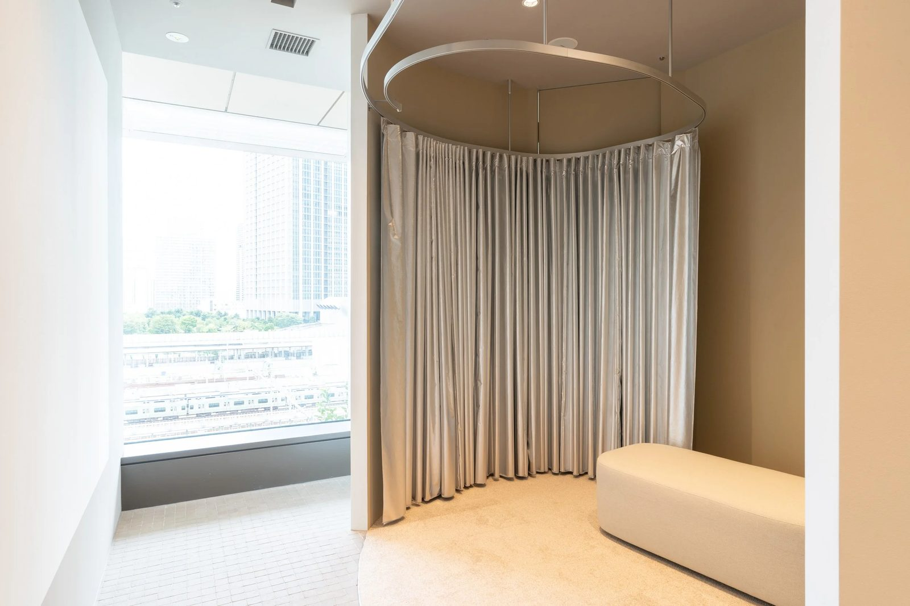
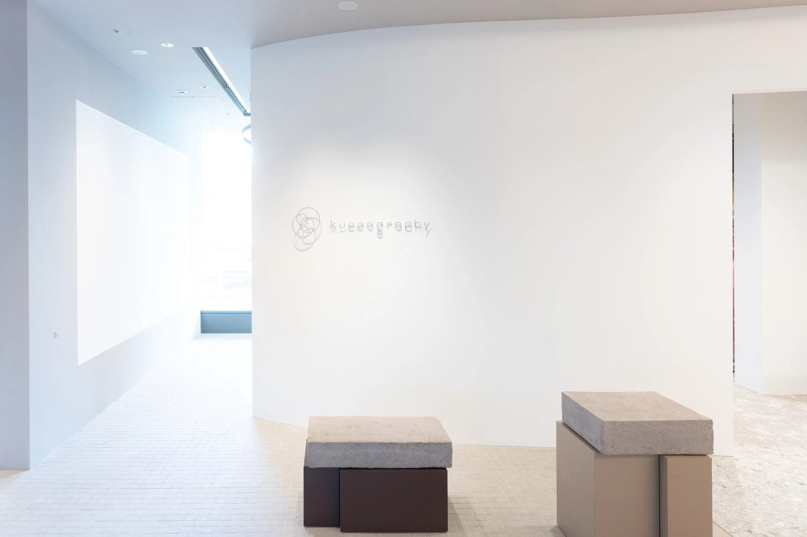
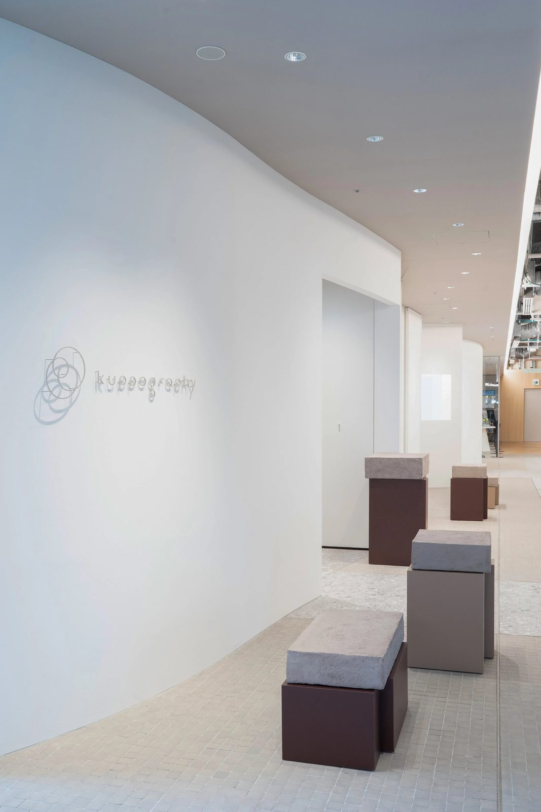
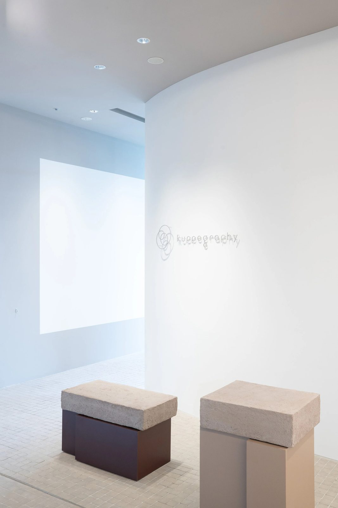
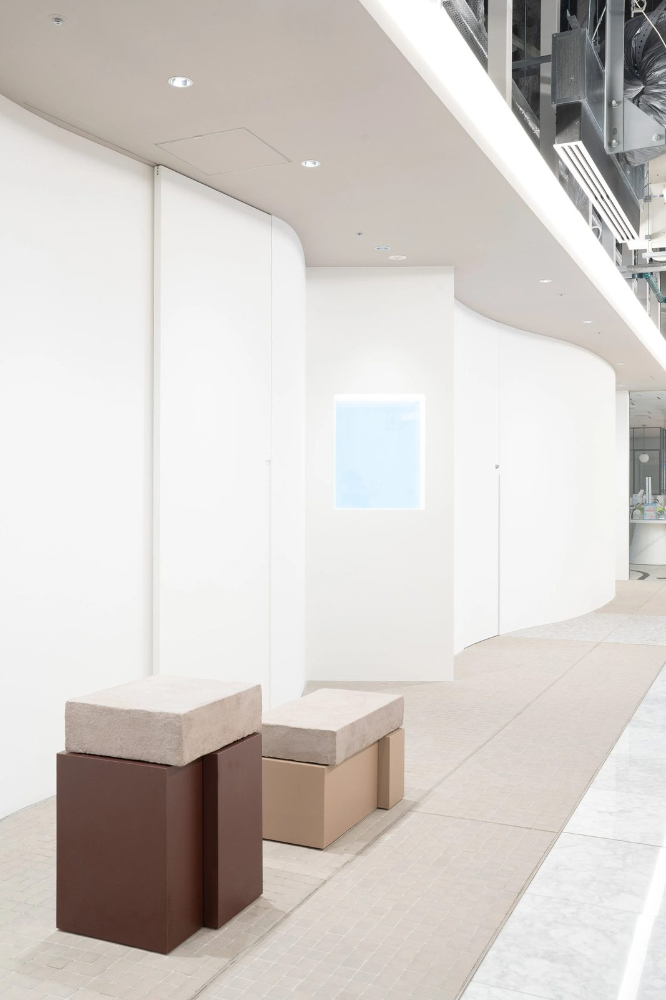
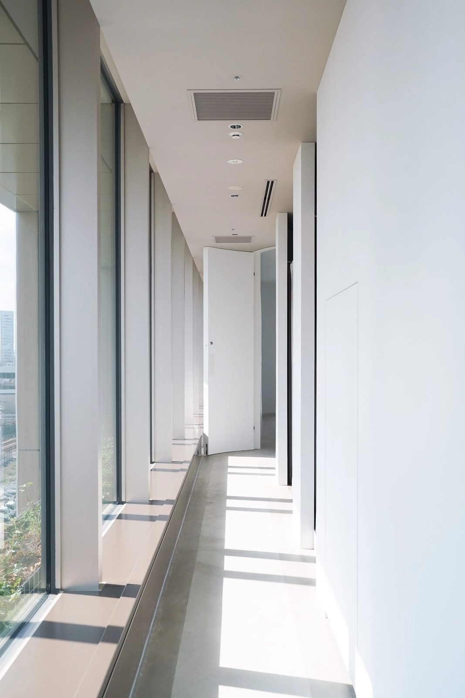